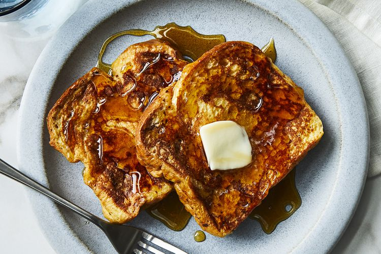

French Toasts

Description
it's easier than you think to make restaurant-quality French toast in the
comfort of your own kitchen – you just need a few staple ingredients and a
good recipe. This tender, fluffy, and indulgent recipe comes together
quickly and easily with just five ingredients you already have on hand.
French Toast Ingredients
- ⅔ cup milk
- 2 large eggs
- 1 teaspoon vanilla extract (Optional)
- ¼ teaspoon ground cinnamon (Optional)
- salt to taste
- 6 thick slices bread
- 1 tablespoon unsalted butter, or more as needed
Steps to make French Toasts
-
Whisk milk, eggs, vanilla, cinnamon, and salt together in a shallow
bowl.
- Lightly butter a griddle and heat over medium-high heat.
-
Dunk bread in the egg mixture, soaking both sides. Transfer to the hot
skillet and cook until golden, 3 to 4 minutes per side. Serve hot.